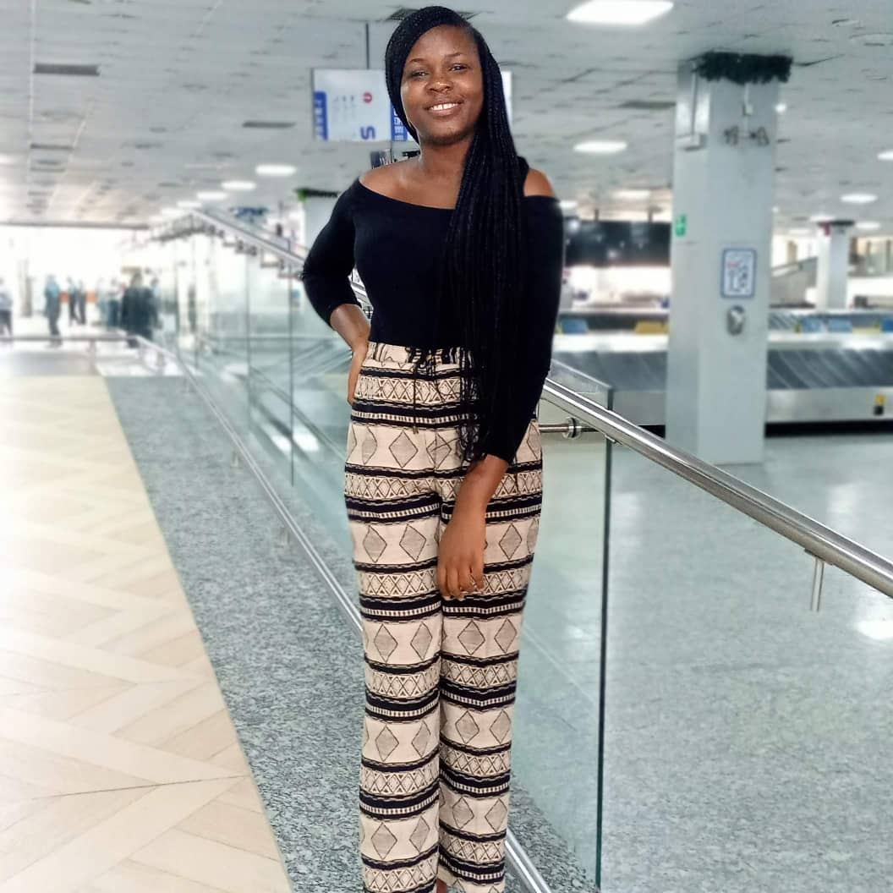
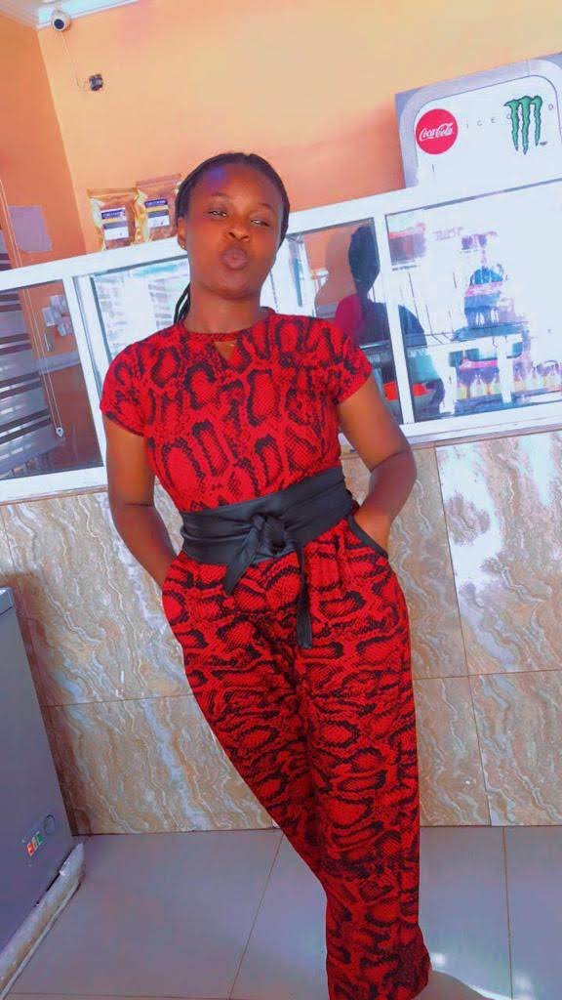
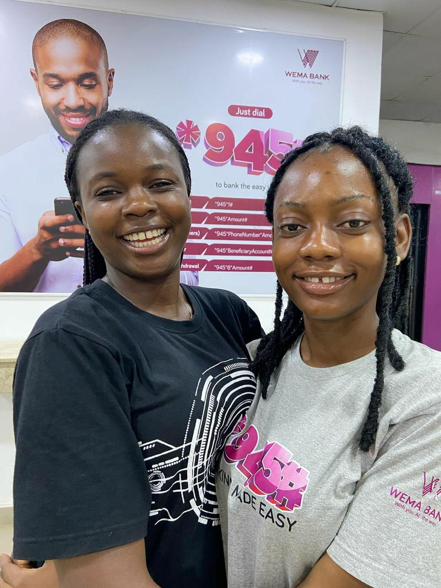

MY HOBBIES
Since my early school life, I have learnt good manners, good habits, discipline, obedience and etiquette from my parents and teachers. My hobbies are reading, surfing the internet, watching movies and learning new things. I like to read novels and biography books. In my free time I love to surf internet in order to learn new things and things going on in the world, also watch movies. Sometimes I become quiet and shy but I also love being friendly and social with my friends.
EDUCATION AND WORK EXPERIENCE
I started my primary school education at Baptist Nursey and Primary School in 2004. I graduated from primary school to Baptist High School in September 2009, then I moved to Regina Mundi Girls'Secondary School, Iwo, Osun State where I finished high school in July 2014. In January 2016, I gained admission into Federal University of Agriculture, Abeokuta, Ogun State (FUNAAB) to study Hospitality and Tourism and graduated in October 2021. During my studies, I interned for 6 months at Murtala Muhanned International Airport, Lagos State. Upon completion of my studies in 2021, I had my National Youth Service Corps (NYSC) from Februay 2022 to February 2023; where my primary place of assignment was Minders Kitchen, Osogbo, Osun state. In November 2023,I got a Sales Marketing positon at Wema bank retail division. My ambition in life is to become a professional backendend developer and hoping that my work will contribute to the society at large

Murtala Muhammed Airport in 2019

NYSC at Minders, Kitchen and Bakery in 2022

Picture with my collegue at Wema